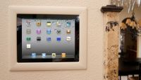
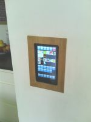

|
This page last changed on Oct 05, 2014 by rberg.
I'll have an in-wall mount android table, I'm planning to install around 6 in the house all in-wall mount, like this in the picture.

The tablet i'm using does not have the "home" button to wake it up so I need to use the power button.
However the power button will not be accessible with the in-wall mount.
If the screen goes off the touch sensor goes off as well, It can't be awake with a touch in the screen.
I think in an app to dim the screen all the way down so the sensor continue working for the touch.
Anyone with similar scenario? I would not like to have the screens on 24/7 during years.
|
Hi I have put a 7 inch android tablet in the wall a year ago to run openremote and very happy with the setup. I just put it on a clock screen saver, it uses very little power, it also means just a quick tap and it is back to the openremote app.
My first tablet was the cheapest I could find and it worked ok but was not very reliable and kept crashing. I replaced it recently with one I bought for about 30euros off ebay and it is absolutely fine. I can access it from behind if needed because if there is a powercut and the battery runs out then I have to be able to hard reboot it. I also learnt from the first one to turn off auto updates and anything that might cause problems (my kids kept installing games so I locked down the playstore).
I am quite good with woodworking so I built my own mount. I was going to put in more around the house but in practice I prefer using my phone or tablet. This is especially true for choosing films or music.
The wall mounted one is very central and can't be stolen by the children and it gets used a lot. I also put it quite low so that the children can reach and put on music. I also learnt to have one simple screen with all the main functions on it and some simple presets for music and lighting scenes.
If you are regularly updating openremote then bear in mind that the android app will need restarting as it will lose contact with the server. There may be a way of automating this using something like tasker but I've not done it. If you had a few tablets in the wall then you would probably need a solution.


Posted by jules_bike at Oct 06, 2014 08:51
|
|
Thank you for share your experience.
I'll go with you and keep the clock in the screen saver.

Posted by rberg at Oct 09, 2014 01:13
|
|
If you are still interested I've found a solution that seems to work nicely for android in wall screens using Tasker and Motion Detector. Motion detector uses the front camera to create events which can be picked up by Tasker so that you can wake the screen when it detects movement. I've got this running on a couple of in wall androids and it works nicely. Of course the tablets are still using power but at least the screens are off. I had one in my home cinema room and even with the screen on clock screen saver it gave off some light and this has fixed that. If you need more info let me know.
Posted by jules_bike at Dec 14, 2014 12:02
|
|
Hi Jules,
It is very interesting the use of the camera to create events.
Can you give me more details how to implement it?
Thanks for share it.
Posted by rberg at Dec 14, 2014 17:10
|
|
Hi -
So you need to download the Tasker app, and the app Motion Detector both costs a few euros. You also need the secure settings plug in for Tasker which is free which gives the function to turn on the screen from within tasker.
In tasker you create a profile which I called "Motion detector" based on an event
"Intent received" which has the action "org.motion.detector.ACTION_GLOBAL_BROADCAST"
This will tell tasker to do something each time there is motion detected.
You assign the following action to the Motion detector profile which you can call "Screen on"
If %SCREEN eq off
Secure settings
Configuration
Screen & Keyboard Lights on 1 second
You then just set up Motion detector to you liking based on how sensitive you need it to be. Make sure you tick Notifications so that it can communicate with Tasker.
I then use the built in Android Display sleep to turn of the screen after say 1 minutes inactivity. You could use tasker to turn off the screen based on no motion as well but I think this works better.
I found a youtube video which also shows the tasker setup for an older version of the motion detector and a slightly different usage but might help:
youtube link
Good luck and let me know if you need help...
Posted by jules_bike at Dec 15, 2014 20:11
|
|
{kind=link}
{kind=link}
{kind=link}
{kind=link}